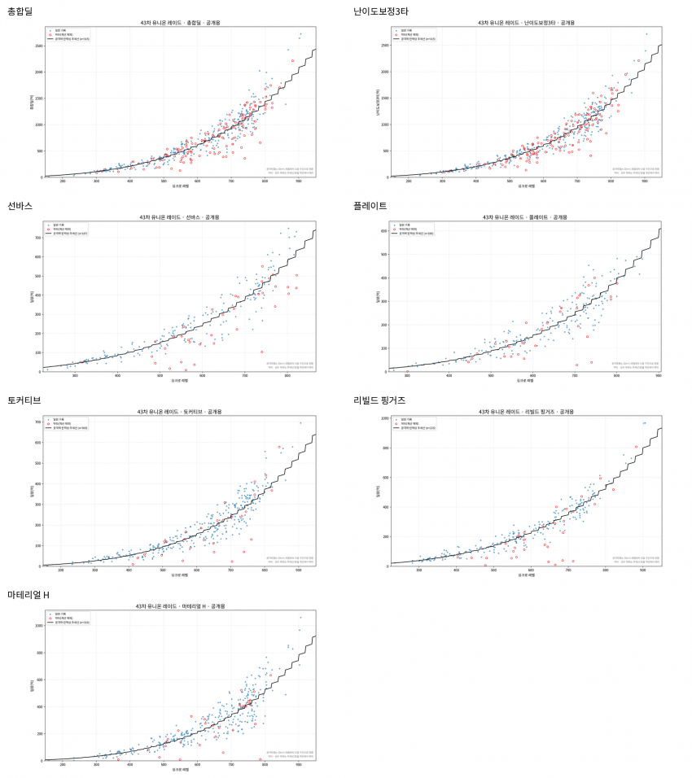

=> 갤유뇬 결산 시트도 받습니다.
그 옆집에서 부족하지만 니붕이들을 조금만 편의를 위해 유레 효율 계산기를 만들고 있는 허접 니붕이입니다. https://arca.라이브/b/nikketgv/178745017
원래는 지금까지 챈 유뇬 시트들로 만들고 있었는데 갤유뇬도 결산 시트 제공의 관심 있다면 불러만 주십쇼. 제공 받은 시트는 유니온 효율 계산기에 사용함.
아 그리고 주소는 어지간해서는 nikke-union-raid-portal.netlify.app 이거로 고정임.
